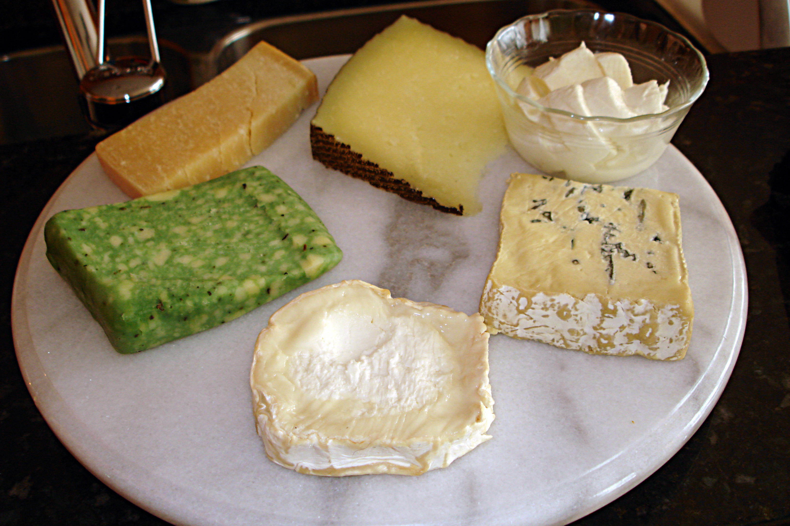
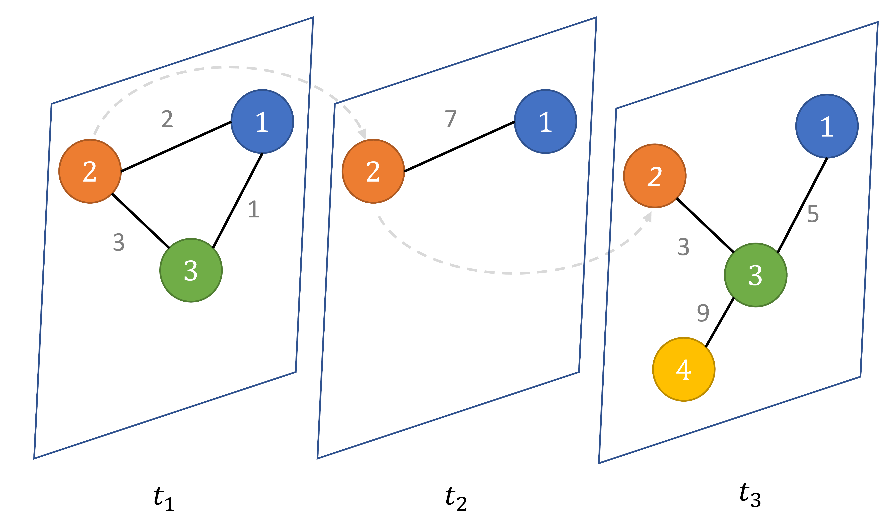

The Community of Cheese
Raphtory implements a multi-layer LPA as a Dynamic community detection approach in large word-corpus network and is able to detect a “Community of Cheese” without prior training.

We’re expanding Raphtory to work with a number of different algorithms to test its capability in a variety of areas. One of those areas is community detection which is quite a venerable area of research in graphs in general but less explored in the temporal graph space. The traditional problem is to divide the nodes of a graph into separate communities where links are more common between nodes in the same community and less common between nodes in different communities. There are various ways to make this more formal, for example defining the notion of modularity (the fraction of edges between nodes in the same community minus the fraction you would expect from a random graph with the same degree distribution).
Here, we’re working with the Label Propagation Algorithm which is an easy to understand algorithm that, in brief, has nodes propagate the most common label they see in their neighbours repeatedly until convergence. Communities end up having the same label. But how does this work on graphs that change in time? We want the possibiltiy to observe nodes migrating between communities. We want the possibility that communities merge or vanish. Some researchers try to achieve this with graph snapshots. You run your favourite community detection algorithm on many different snapshots and then try to identify when the “same” community is present in different snapshots in what’s call a community matching problem. So if in snapshot 1, nodes A, B, C and D were together in a community and in snapshot 2, nodes A, B, C, D and E were together, you might hypothesise that E has joined that community. However, this joining and merging presents some tricky problems in itself and is difficult to track with large graphs.
Using a fully temporal graph system like Raphtory, we can try another approach (I should also say people have approached this problem with “hand rolled” solutions). In addition to “spatial” links connecting nodes at given times, we can imagine a “temporal” link that connects a node with itself at a later time. You can imagine it like this, instead of having a number of different graphs at different times you have a single graph in space-time with space-like and time-like links. You then run your favourite community detection algorithm on your “space-time” graph.

Of course, a number of questions remain open, in particular what weight should be given to the “time-like” links between a node and itself at a different time. If that is set very high a node can never change community. If it is set very low then nodes change community “too often” there’s no stickiness or notion that a node should in some sense be the same at later or earlier times. One of the nice things about Raphtory is it allows us to experiment with vectors of weights simultaneously.
Right now, we’re looking at a word co-occurrence data set. Words are linked if they co-occur in a sentence in our corpus. The hope is that the community detection will allow us to find some communities that represent words that are in some sense the same. I should also emphasise that the corpus of words is very large. In fact it quite clearly includes some spurious “non-words” that are simply typos common enough to make it into the data set.
The best community we have found so far is the “community of obscure cheese”. It is a small community centred on occurrences of non-that-common cheeses and cheeselike words in our 2008-year word set. The same community has cheesecloth, gruyere, gorgonzola, geta, cheesestrings, grated, truffled, rinded as well as misspellings like chedder and a few genuinely unexpected non-words “unscrewingtheinscrutable”.
This is from a first run with no tuning whatsover so it’s fascinating to see this sort of thing emerge. I present the community of slightly obscure cheese.
('blintzes', '2006'),
('rinded', '2006'),
('blintzes', '2007'),
('rinded', '2007'),
('baguettes', '2008'),
('banir', '2008'),
('biocatalogue', '2008'),
('biryanilamb', '2008'),
('blintzes', '2008'),
('boerag', '2008'),
('camembert', '2008'),
('camenbert', '2008'),
('caws', '2008'),
('chavroux', '2008'),
('chaws', '2008'),
('chedder', '2008'),
('cheese', '2008'),
('cheesecloth', '2008'),
('cheesemaking', '2008'),
('cheestrings', '2008'),
('crostini', '2008'),
('crumbly', '2008'),
('dairying', '2008'),
('dairylea', '2008'),
('dolcelatte', '2008'),
('dowzer', '2008'),
('dunkers', '2008'),
('edam', '2008'),
('eggsdamp', '2008'),
('emmental', '2008'),
('emmenthal', '2008'),
('feta', '2008'),
('fontina', '2008'),
('goats', '2008'),
('gorgonzola', '2008'),
('gouda', '2008'),
('grated', '2008'),
('grater', '2008'),
('gruyere', '2008'),
('halloumi', '2008'),
('hashbrowns', '2008'),
('havarti', '2008'),
('jelo', '2008'),
('knivesprice', '2008'),
('leerdammer', '2008'),
('limburger', '2008'),
('livarot', '2008'),
('macaroni', '2008'),
('makingdairy', '2008'),
('manchego', '2008'),
('mixtura', '2008'),
('mozerella', '2008'),
('myzithra', '2008'),
('nachos', '2008'),
('panir', '2008'),
('parmesan', '2008'),
('pecorino', '2008'),
('pepperjack', '2008'),
('picanha', '2008'),
('poneer', '2008'),
('provolone', '2008'),
('pzh', '2008'),
('reblochon', '2008'),
('rennet', '2008'),
('rinded', '2008'),
('roquefort', '2008'),
('sachertorte', '2008'),
('salami', '2008'),
('selsig', '2008'),
('shopsdairies', '2008'),
('stomaching', '2008'),
('stonecycle', '2008'),
('truckles', '2008'),
('truffled', '2008'),
('unpasturised', '2008'),
('unscrewingtheinscrutable', '2008'),
('velveeta', '2008'),
('wedgets', '2008'),
('yogurts', '2008')